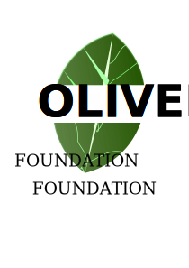

So, Why Africa???

There are no facts, only interpretations.
– Friedrich Nietzsche, Notebooks (1886-87)
Africa is the least developed continent in the world, having 34 of the 49 poorest countries. More than 40% of its population live on less than one dollar a day.
In general, the principal causes of hunger include poverty, conflict, climate and weather, lack of investment in agriculture, and unstable markets. In the whole of Africa, 257 million people are experiencing hunger, which is 20% of the population
Universal Opulence
Make hunger issues on both Local and Global agendas
Before you can solve any iisue better, there has to be an Awareness
Pursuit for wealth in financing our investment
More money would be just fine however Africans must support their own, in order to succeed
Self development and proactive measures on improving Agriculture
We must take the lead in defining their own path to prosperity
ABOUT US

oliver foundation program intends to operate just as any other NGO that seeks to serve social or environmental objectives, empower people, engage in advocacy for change, and provide services. Like any NGOs, we have formal characteristics aimed at our survival as an organization. We are relatively new to the World and we seek to launch projects to help African , Ghanaian community as a focus as at now. We seek to Campaigning for sustainable development,tackle Eradication of Poverty. Children empowerment and a whole of projects.Organization of literacy, post literacy and out of school education programmes; Organization of saving and credit groups; Organization of income generating programme to poor people through skills training; Learning materials development and publication; Poverty is linked with negative conditions such as substandard housing, homelessness, inadequate nutrition and food insecurity, inadequate child care, lack of access to health care, unsafe neighborhoods, and underresourced schools which adversely impact our nation's children. Poverty is a state or condition in which a person or community lacks the financial resources and essentials for a minimum standard of living. Poverty means that the income level from employment is so low that basic human needs can't be met.